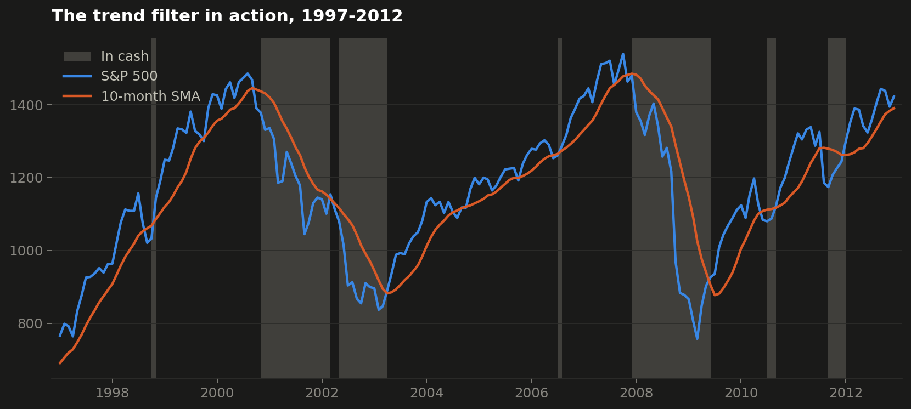
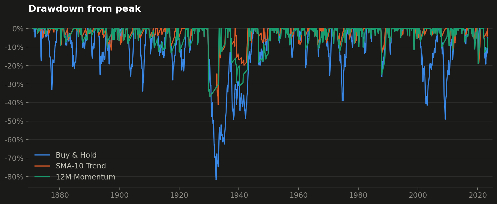

1Project Scope & Problem
Trend-following is one of the oldest ideas in quantitative investing: stay in the market while it is trending up, step aside when it turns down. It sounds sensible — but does it actually survive contact with data, or does it just trade away returns in false alarms? Most online backtests answer this over 10 or 20 convenient years, which proves very little.
I set out to test it properly: over the longest quality dataset available for equities — Prof. Robert Shiller's monthly S&P 500 series going back to 1871 — with the accounting details handled honestly (dividends, interest on cash, no look-ahead), so that the result reflects the strategy and not a bug in the backtest.
2My Role & Solution
Solo project: I designed and wrote the whole engine. It is a small, readable Python package where each concern lives in its own module — data loading and cleaning, strategy rules, the portfolio engine, performance metrics, and charting. A strategy is just a function that turns a price series into a 0-or-1 position series, so adding a new idea is a few lines.
Two classic rules are tested against the buy-and-hold benchmark: SMA-10 (invested while the index sits above its 10-month moving average) and 12-month momentum (invested while the trailing 12-month return is positive). While a strategy is out of the market, its cash earns the long-term interest rate from the same dataset — parking money at 0% would quietly rig the test against sitting out.
3Work Process
The interesting work in backtesting is refusing to fool yourself. Three decisions mattered most:
- No look-ahead bias. A signal computed on this month's close can only be traded next month — every strategy shifts its positions by one period. Skipping that single line of code inflates results and is the most common backtesting mistake.
- Dividends included. The headline run uses total returns. A price-only comparison flatters market-timing, because the timing strategies earn interest while in cash, yet buy-and-hold's dividends are silently dropped. Building both modes and seeing the gap between them was the best lesson in the project.
- Cleaning real data. The source publishes prices promptly but dividends and rates with a lag, padding recent months with zeros — which would read as "the S&P suddenly stopped paying dividends" if taken literally. The loader treats those zeros as missing and truncates the total-return study where the dividend record genuinely ends.

4Outcome & Results
Over 152 years of total returns, both trend rules beat buy-and-hold — but the headline number is not the point. The point is the risk column: both rules roughly halve volatility and cut the worst peak-to-trough loss from −82% (the 1930s) to about −40%, while being invested only 63% of the time.
| Buy & Hold | SMA-10 | 12M Momentum | |
|---|---|---|---|
| CAGR | 9.17% | 11.08% | 10.12% |
| Volatility | 14.07% | 9.41% | 9.67% |
| Sharpe ratio | 0.38 | 0.69 | 0.58 |
| Max drawdown | −81.8% | −41.0% | −36.7% |
| Time in market | 100% | 63% | 63% |
| Trades | 0 | 207 | 127 |

